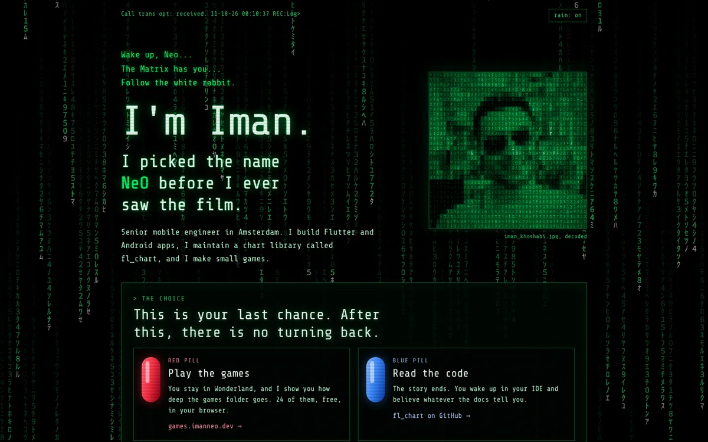
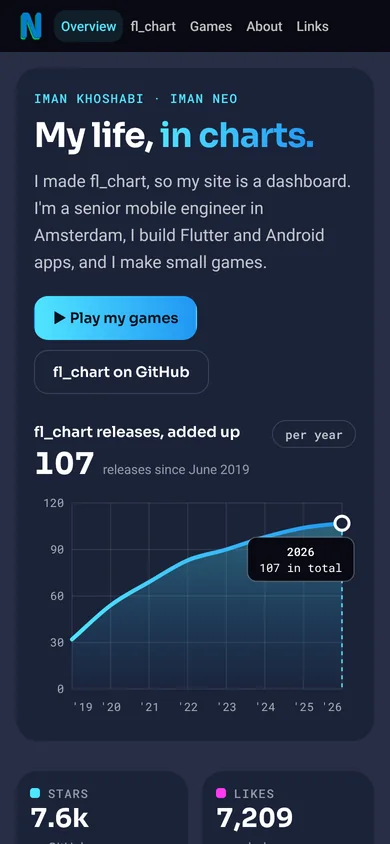
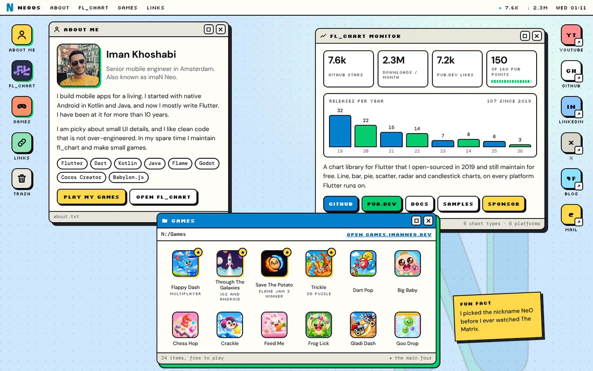
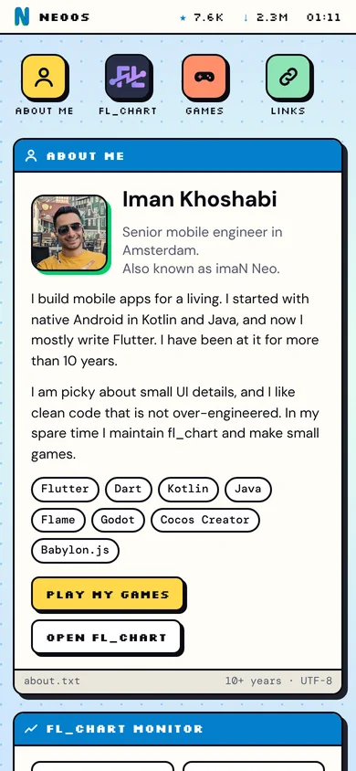
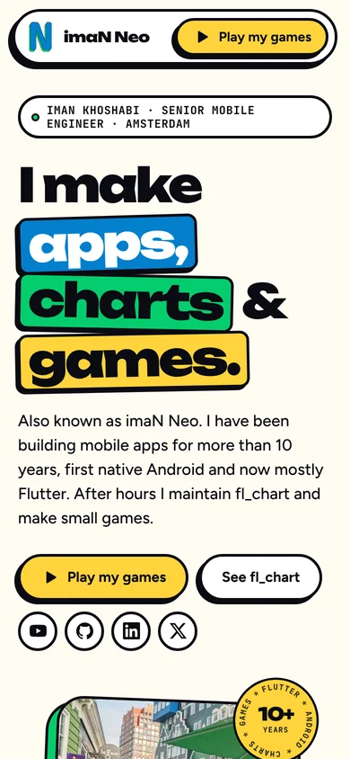

Ten ways to rebuild imanneo.dev
Every option is a working page, not a picture. Your links, your 24 games and the fl_chart numbers are all in there. Open a few, click around, then tell me a number, or a mix of two.
-


01Dark, warm
The riced terminal
A tiling desktop of terminal panes. Everything is readable at a glance, and the shell at the bottom really takes commands.
TryType
Open option 1helpin the shell at the bottom.play trickleandtheme tokyowork too. -


02Dark, green
Wake up, Neo
Digital rain, a red pill for the games and a blue pill for the code. Built on the nickname you picked before you saw the film.
TryTake a pill. The red one goes to the games, the blue one to the code.
Open option 2 -


03Dark, neon
Life in charts
The site as a dashboard in the fl_chart sample app's own colours. Every section is a chart you can touch, drawn from real numbers.
TryHover any chart, and switch the big one to per year.
Open option 3 -


04Light
The package page
You, published as a package: Readme, Changelog, Example, Installing, Versions and Scores tabs, with a score box on the side.
TryOpen the Versions and Scores tabs.
Open option 4 -


05Dark IDE, light app
main.dart
An IDE on the left, a phone on the right. The Dart code builds the app you are looking at, and hot reload really reloads it.
TryPress R for hot reload, or turn on Select widget and click something in the app.
Open option 5 -


06Dark, pixel
Insert coin
An arcade cabinet. Your stats are the high scores, the games are the game select screen, and the arrow keys work.
TryPress Start, then move through the games with the arrow keys.
Open option 6 -


07Dark, playful
Through the galaxies
A rocket flies from planet to planet as you scroll, the way it does in your own game. Each planet is a part of your work.
TryScroll, or press Launch, and the rocket flies to the next planet.
Open option 7 -


08Light, print
The datasheet
You, documented as an electronic component: pinout for the links, electrical characteristics for the stats, figures for the charts.
TryUse the bookmarks and the zoom buttons, like in a real PDF viewer.
Open option 8 -


09Retro desktop
NeoOS
A small operating system with draggable windows, a start menu, a games folder and a clock in the corner.
TryDrag the windows around, open the N menu, and look in the Trash.
Open option 9 -


10Light, loud
Neo-brutal N
Your blue N logo turned up: thick outlines, hard green shadows, big type and a stats ticker. The one that is not a costume.
TryFilter the small games by genre, and hover the release chart.
Open option 10
Inside each option there is a small pill in the corner that steps to the next one or brings you back here. It belongs to this preview, not to the designs.
If you want my opinion
You asked for geeky, so that is how I ranked them.
- 05main.dart is the one I would build. It is geeky in the way that is most yours: Dart on the left, the running app on the right, and hot reload that works. On a phone it simply becomes the app.
- 03Life in charts, if fl_chart should lead. The whole site is drawn in the colours of your own sample app, and every section is a chart you can touch.
- 10Neo-brutal N, if it should still feel right in three years. It grows out of your logo instead of putting on a costume.
- +Mixing is fine. For example option 10 as the base, with the chart section from option 3.
Good to know
The small print behind all ten.
- The fl_chart numbers are a snapshot from 17 November 2026: 7.6k stars, 2.3M downloads a month, 7,209 likes. The real site will refresh them from GitHub and pub.dev on its own.
- The game links point to games.imanneo.dev, so they start working once the games site has moved there.
- One link needs your yes. I could not confirm the mailing list link (iman-khoshabi.kit.com/profile). It is not on your current site and the page would not open for me. Tell me if it is right, or I will take it out.
- Your current site has the contact email with the domain written twice in
hugo.yaml. The new build fixes that. - Nothing on the live site changes until you pick.
Next step: reply with a number. I will build that one into the real Hugo site and open a pull request for you to review.